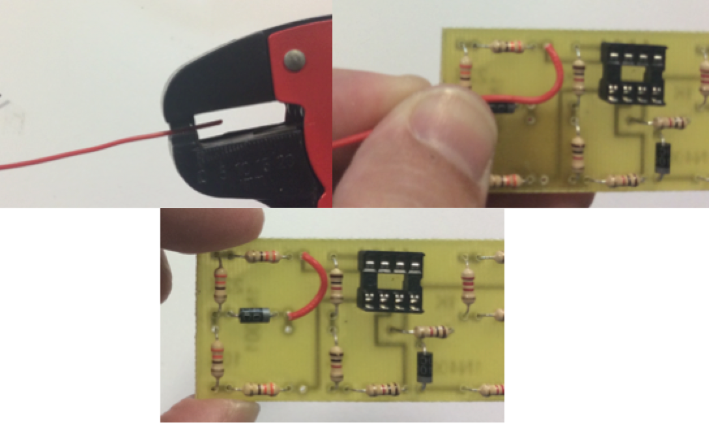

Link Wires
Table of Contents
1 Link Wires
We're now well on our way to completing our soldering license. Sometimes when we solder together a PCB, we need to connect other components like LEDs or motors that we don't want on the PCB itself. To connect our circuits to other things, we use wires.
Learn it
- There are two sorts of wire that we use: Multi-core (sometimes called multi-strand) and single-core (sometimes called solid-core).

- Single-core wire has one single thick strand of wire inside it's plastic insulation. It is cheap to manufacture, but stiffer to work with than multi-core, and can easily break if moved around too much (known as metal fatigue). It is useful for track repairs, and connecting one PCB to another where no movement will occur. It is also easier to put through the holes in a PCB.
- Multi-core wire is made up of several fine wires twisted together inside the plastic insulation. Although more expensive than single-core and harder to poke through PCB holes, it is easier to attach to other components (e.g. LEDs), and less likely to snap.
- When working with wire, a side cutter is used to cut it, then a wire-stripper can neatly and accurately remove the insulation. We will use both types of wire, so you have experience with both.
Build It
- Cut approximately 5cm of single-core wire, and use the wire-stripper to remove about 1cm or insulation from one end. You don't need to use a ruler to do this; just guess.
- Using long-nose pliers to grip the stripped wire end, bend a sharp 90 degree bend in the wire. Poke the stripped end through the hole labelled "B", so that the stripped end is sticking out on the solder-side of the PCB.
- Next, using your fingernail (or anything with a hard edge on it if you've got none), make a mark in the insulation where the second hole for the single-core repair is (marked "C" on the PCB). You should now have something that looks like step 1 in the photo below.

- Now, use the wire stripper CAREFULLY to strip to the point where you made your mark, as seen in stage 2 of the photo above.
- When stripped (it might take a few attempts to get this right), use long-nose pliers again to make another 90 degree bend in the wire, do you've got an "n" shape. The top-right corner of the picture above shows this.
- Insert the perfectly trimmed legs into the PCB, ensure the wire is sat flat on the board, bend the legs out 45 degree like before, then solder it in place. Trim with a side-cutter to finish the first link.
- You can now repeat this process for multi-core wire, which runs down from point "D". It'll be more difficult, as the individual strands will try and escape - don't be surprised if it takes a few attempts to get this right.

- The finished result should look something like this. My single-core (red) insulation looks slightly tatty; this is because I left the soldering iron on for too long, and it started to melt the insulation!